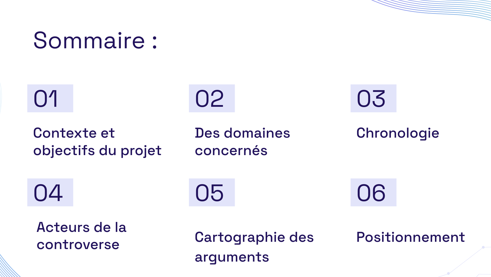
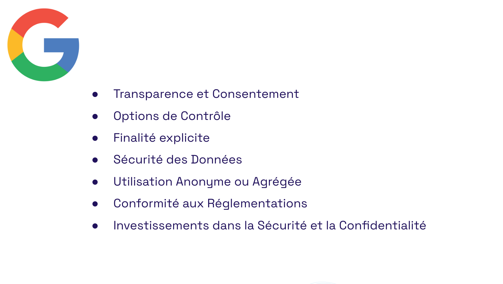
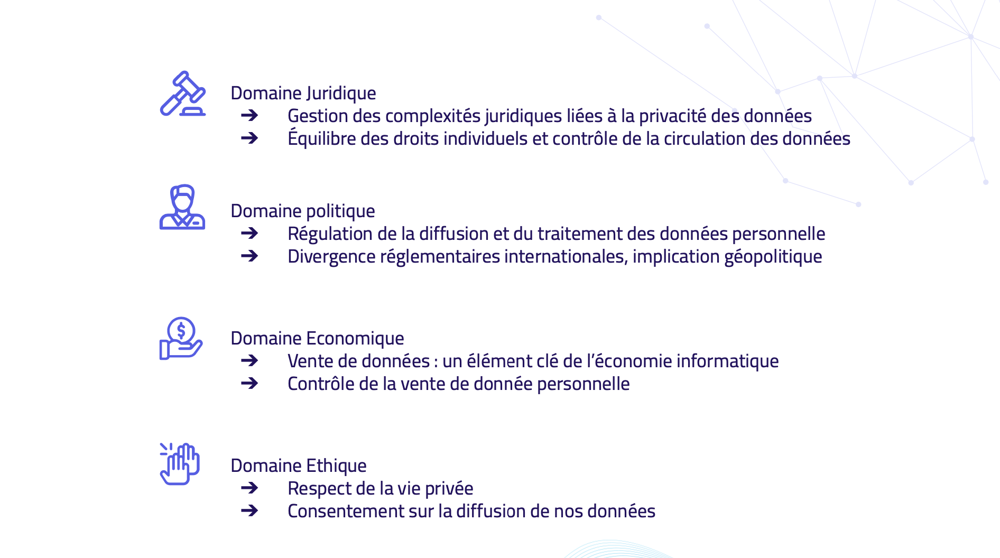

Ce projet vise à engager une discussion approfondie sur les implications éthiques et financières de la vente de données personnelles par les entreprises.
Identification des processus internes de l'organisation pour évaluer les avantages et les risques de la vente de données personnelles, permettant une meilleure compréhension et optimisation des systèmes d'information en place.
Analyse détaillée des attentes et préoccupations des parties prenantes en matière de vente de données pour créer des stratégies de communication efficaces et appropriées.
Évaluation de la faisabilité du projet en tenant compte des contraintes légales, techniques et sociales, déterminant les conditions éthiques de réalisation du projet.
Conception d'un cadre de gestion de projet pour assurer une approche éthique à chaque étape, en prenant en compte les répercussions de la vente de données personnelles.
En tant que chef de projet, les compétences acquises pendant ce cours ont été appliquées pour mener le projet, en conciliant les aspects techniques, légaux et éthiques pour un débat constructif sur les enjeux contemporains.
Vous pouvez obtenir le présentation complète en allant sur mon GitHub :